Balões
Os balões possuem características diferentes, e cada tipo exige estratégias específicas para ser estourado. Os balões mais resistentes aparecem conforme as rodadas avançam, tornando o jogo cada vez mais desafiador, veja alguns balões presentes no jogo:
Balões Básicos:
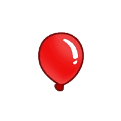
Balão Vermelho
É o mais simples e precisa de apenas um acerto para ser estourado.
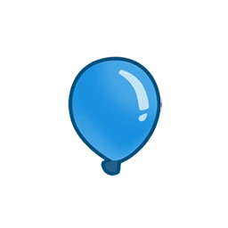
Balão Azul
Ao ser estourado, transforma-se em um balão vermelho.
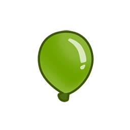
Balão Verde
Contém um balão azul em seu interior.
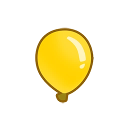
Balão Amarelo
Contém um verde e é mais rápido dos balões básicos.
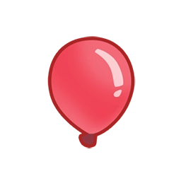
Balão Rosa
Contém um amarelo e é um dos balões comuns mais rápidos.
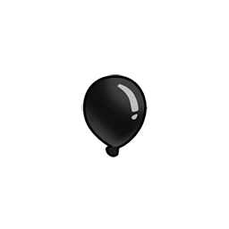
Balão Preto
Transforma-se em dois balões rosa e é imune a explosões.
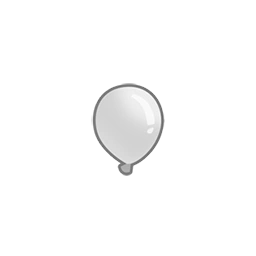
Balão Branco
Transforma-se em dois balões rosa e é imune a ataques de congelamento.
Balão Roxo
Transforma-se em dois balões rosa e é imune a ataques de fogo, plasma e energia.
Balão Zebra
Contém um balão preto e um branco, é uma junção do balão preto e branco em um só, sendo imune a explosões e congelamento.
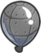
Balão de Chumbo
Possui uma camada metálica resistente a ataques comuns de objetos pontiagudos, exigindo ataques capazes de perfurar chumbo.
Balão Colorido
Contém dois balões zebra, que se dividem em balões menores quando estourados.
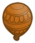
Balão Cerâmica
Possui uma camada externa resistente, que precisa receber vários acertos antes de se romper e revelar dois balões arco-íris.
Características Especiais:
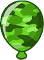
Balão Camuflado
Não pode ser detectado pela maioria das torres sem melhorias ou habilidades específicas.
Balão Regenerador
Recupera camadas perdidas com o tempo se não for estourado rapidamente.
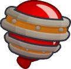
Balão Fortificado
Possui resistência adicional, tornando-se mais difícil de destruir.
MOABS:
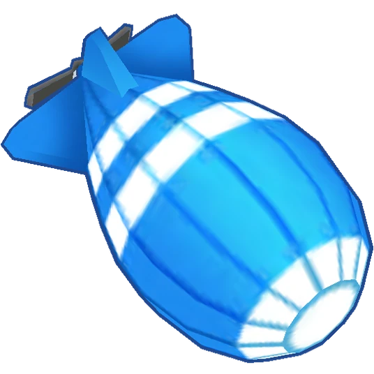
MOAB
É um dirigível resistente que, ao ser destruído, libera quatro balões cerâmicos.
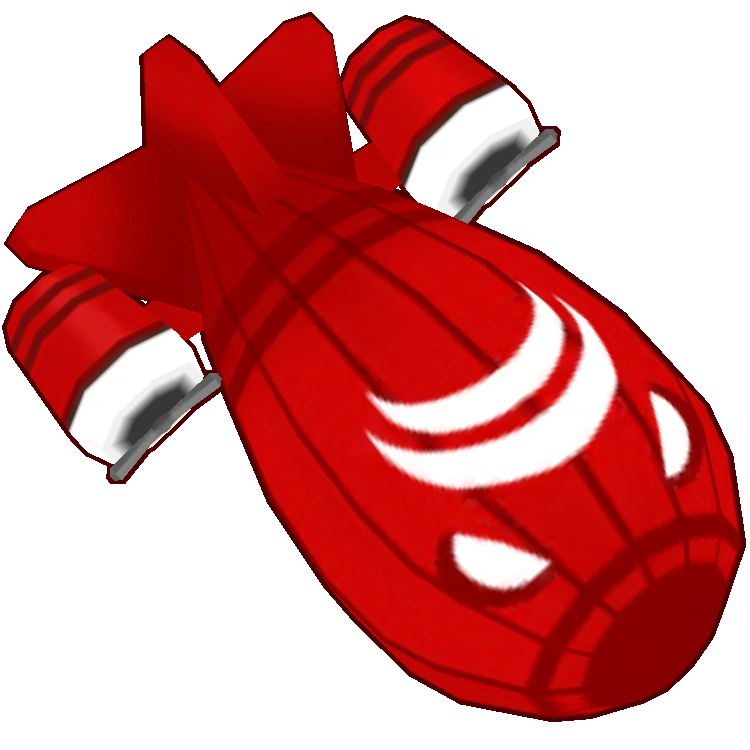
BFB
É maior e mais resistente que o MOAB e libera quatro MOABs quando é destruído.
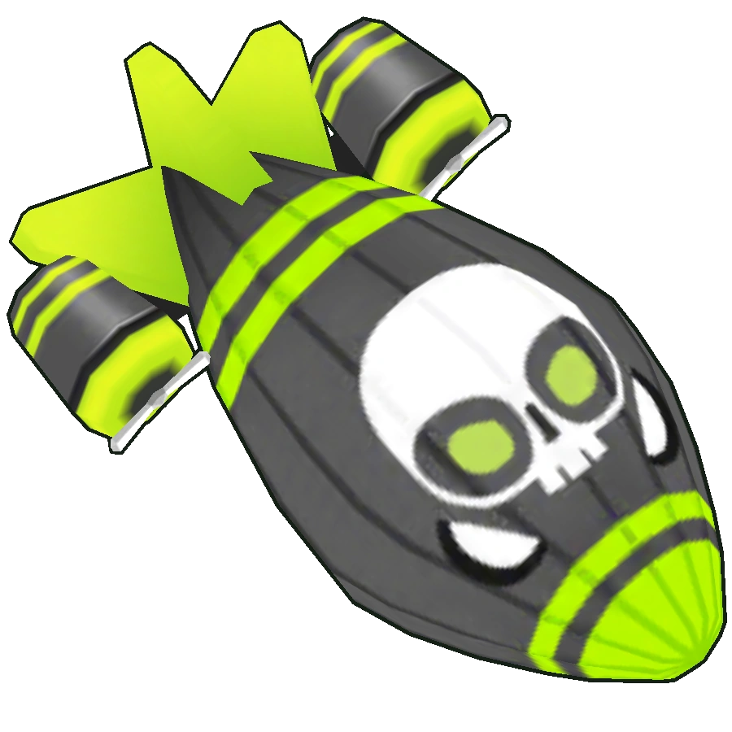
ZOMG
É um dirigível muito resistente que libera quatro BFBs ao ser destruído.
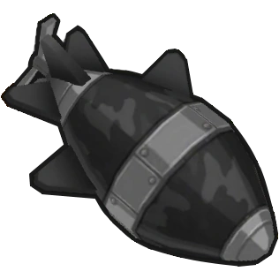
DDT
É rápido, possui camuflagem e combina características dos balões de chumbo e pretos, exigindo torres capazes de detectá-lo e causar dano a ele.
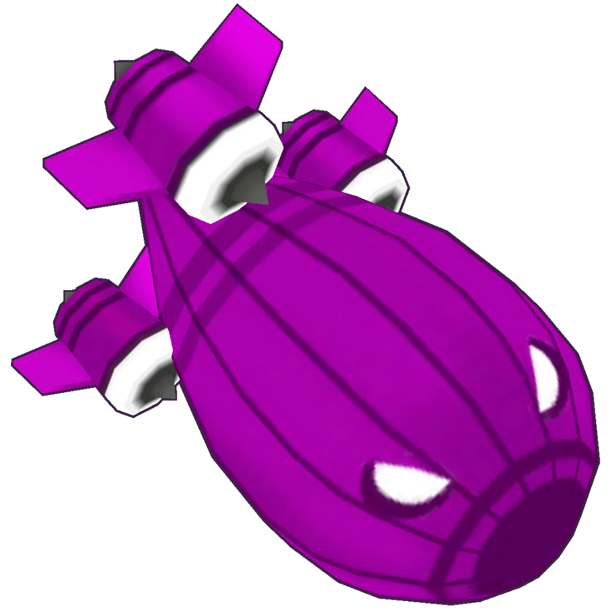
BAD
É um dos inimigos mais resistentes do jogo. Quando destruído, libera dois ZOMGs e três DDTs.